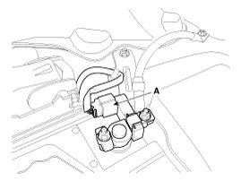
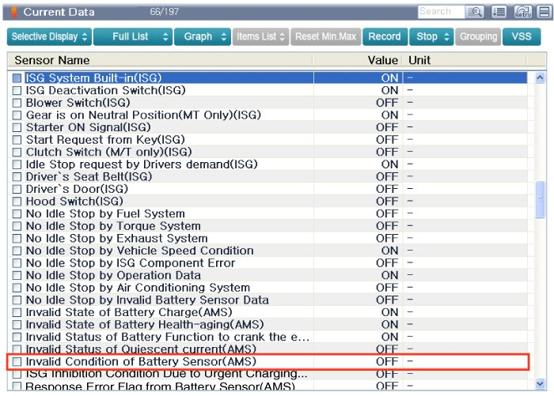
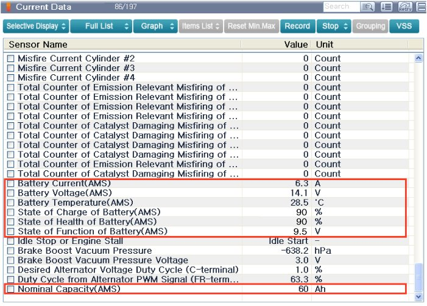

Battery Current Sensor: Service and Repair
Removal
1. Disconnect the battery negative (-) cable.
2. Disconnect the battery sensor connector (A).
3. Remove the battery negative (-) cable after removing the bolts.

Installation
1. Install in the reverse order of removal.
Battery sensor cable installation bolt:10.8 - 13.7 N.m (1.1 - 1.4 kgf.m, 8.0 - 10.1 lb-ft)
Battery (-) terminal l tightening nut:3.9 - 5.9 N.m (0.4 - 0.6 kgf.m, 2.9 - 4.3 lb-ft)
NOTE:
- After reconnecting the battery negative cable, AMS and ISG function does not operates until the system is stabilized, about 4 hours.
If disconnecting the negative (-) battery cable from the battery during repair work for the vehicle equipped with ISG function, Battery sensor recalibration procedure should be performed after finishing the repair work.
NOTE:
- For the vehicle equipped with a battery sensor, be careful not to damage the battery sensor when the battery is replaced or recharged.
1. When replacing the battery, it should be same one (type, capacity and brand) that is originally installed on your vehicle. If a battery of a different type is replaced, the battery sensor may recognize the battery to be abnormal.
2. When installing the ground cable on the negative post of battery, tighten the clamp with specified torque. An excessive tightening torque can damage the PCB internal circuit and the battery terminal.
3. When recharging the battery, ground the negative terminal of the booster battery to the vehicle body.
Inspection
1. Check for DTCs.
NOTE:
- If a DTC is present, perform troubleshooting in accordance with the procedure for that DTC.
2. Check if battery sensor status is normal on current data by using GDS.
If its value is ON, replace the battery sensor.
A. Invalid Condition of Battery sensor (AMS) = OFF

NOTE:
- Battery sensor may operate abnormally if the parasitic current is more than 100mA.
Therefore, if battery sensor signal error occurs, inspect the vehicle parasitic current first before replacing the battery sensor.
Adjustment
Battery Sensor Recalibration Procedure
If disconnecting the negative (-) battery cable from the battery during repair work for the vehicle equipped with Alternator Managing System(AMS) function,
Battery sensor recalibration procedure should be performed after finishing the repair work.
1. Turn the Ignition switch ON and OFF.
2. Park the vehicle about 4 hours under below states.
A. Park the vehicle about 4 hours under below states.
B. Closing the hood, trunk, and all doors.
3. After 4 hours later, check whether the current data are displayed normally or not using GDS.
A. Nominal capacity(AMS) = 60Ah [For Non-ISG type]
B. Nominal capacity(AMS) = 70Ah [For ISG type or Russia region]
C. State of Charge of Battery(AMS) = (0 - 100%)
D. State of Health of Battery(AMS) = (0 - 100%)
4. After cranking the engine 2 times or more, check "State of Function of Battery(AMS) =(0 - 12V)". [For ISG system only]
